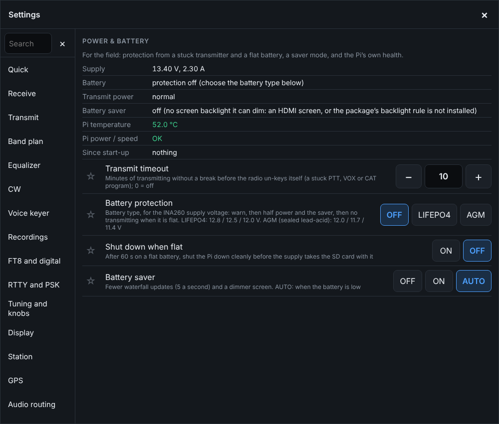
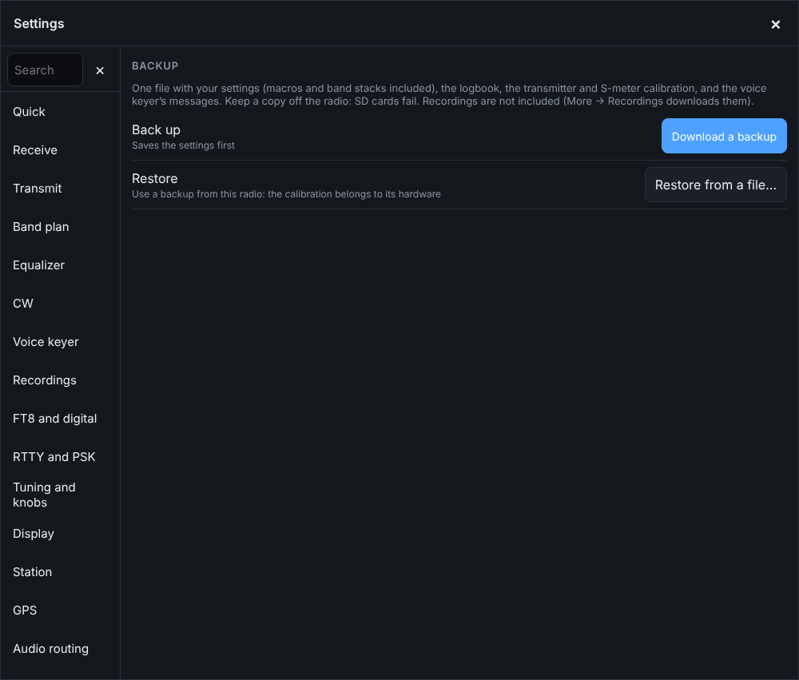
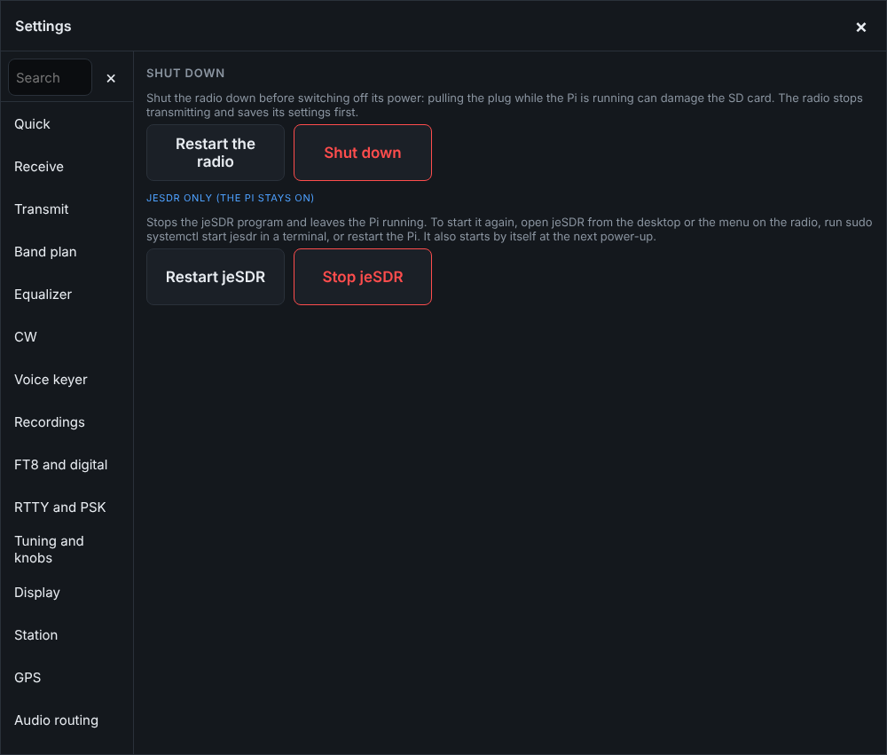
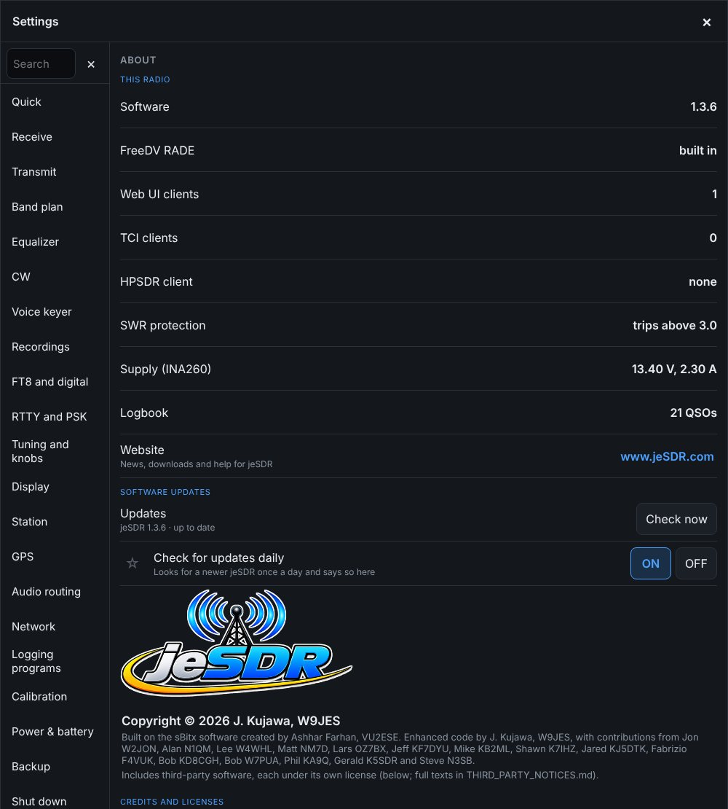

Power & battery, backup, shut down and About#
Power & battery#
For the field: protection from a stuck transmitter and a flat battery, a saver mode, and the Pi's own health. A badge next to the S-meter shows the most important of them; tap it to open this page.

The top of the page shows the supply (with an INA260 power monitor fitted), the battery stage, the transmit power limit, the saver, the Pi's temperature and its power and speed flags, now and since start-up.
- Transmit timeout (10 minutes; 0 = off): after that long transmitting without a break (a stuck PTT, VOX or CAT program) the radio un-keys, stops the keyer, voice keyer and digital modes, and refuses to transmit while something keeps asking. The badge counts down the last minute.
Battery protection (needs the INA260): choose LIFEPO4 or AGM. It watches the resting voltage (readings while transmitting, and just after, are left out):
Stage LiFePO4 AGM What happens Getting low 12.8 V 12.0 V a warning Low 12.5 V 11.7 V drive held to 70 % (about half power); battery saver on (AUTO) Flat 12.0 V 11.4 V transmitting off, settings saved
- Shut down when flat: after 60 s on a flat battery the Pi shuts down cleanly, before the supply takes the SD card with it.
- Battery saver (OFF, ON, AUTO = when the battery is low): 5 waterfall updates a second instead of 20, and the screen's backlight at 40 % where the Pi can dim it (the official touch screens and other DSI panels). The badge shows ECO.
| Setting | Console name | Default | Values | What it does |
|---|---|---|---|---|
| Transmit timeout | TOT | 10 | 0–30 | Minutes of transmitting without a break before the radio un-keys itself (a stuck PTT, VOX or CAT program); 0 = off |
| Battery protection | BATT | OFF | OFF, LIFEPO4, AGM | Battery type, for the INA260 supply voltage: warn, then half power and the saver, then no transmitting when it is flat. LIFEPO4: 12.8 / 12.5 / 12.0 V. AGM (sealed lead-acid): 12.0 / 11.7 / 11.4 V |
| Shut down when flat | BATT_SHUT | OFF | ON, OFF | After 60 s on a flat battery, shut the Pi down cleanly before the supply takes the SD card with it |
| Battery saver | SAVER | AUTO | OFF, ON, AUTO | Fewer waterfall updates (5 a second) and a dimmer screen. AUTO: when the battery is low |
Backup#

Download a backup gives one file (jesdr-backup-CALL-YYYYMMDD-HHMM.tar.gz)
with the settings (macros and band stacks included), the logbook, the
transmitter and S-meter calibration and the voice keyer's messages. Keep a
copy off the radio: SD cards fail. Recordings and the web certificate are not
included.
Restore from a file… checks the archive, keeps the files it replaces in
~/jeSDR/data/before-restore-*, puts the backup's in and restarts the radio.
Restore on the same radio: the calibration belongs to its hardware.
Shut down#

Restart the radio or Shut down the Pi. The radio un-keys and saves its settings first, and every open browser shows what is happening. Shut down before switching the power off: pulling the plug on a running Pi can damage its SD card.
Stopping jeSDR only#
Under jeSDR only (the Pi stays on):
- Restart jeSDR restarts just the jeSDR program. The radio is off the air for a few seconds and every open page reconnects by itself. Use it after changing a server setting that says "restart to apply".
- Stop jeSDR stops the program and leaves the Pi running, for example to work in a terminal, run another radio program that needs the audio codec, or copy files. The radio un-keys and saves its settings first; open pages show that jeSDR is stopped and reconnect by themselves when it is back.
To start jeSDR again:
- open jeSDR from the desktop shortcut or the menu on the radio (it starts the service first), or
- run
sudo systemctl start jesdrin a terminal or over SSH, or - restart the Pi. jeSDR also starts by itself at every power-up.
Console: system stop, system relaunch.
About#

The version, whether FreeDV RADE is built in, connected clients, the SWR protection, supply and log size; a link to the project's website, www.jeSDR.com, for news, downloads and help (on the radio's own screen it asks before opening a window); Software updates (see Installing and updating); and, at the bottom, the credits and the licenses of the software jeSDR includes.
| Setting | Console name | Default | Values | What it does |
|---|---|---|---|---|
| Check for updates daily | UPDATECHK | ON | ON, OFF | Looks for a newer jeSDR once a day and says so here |